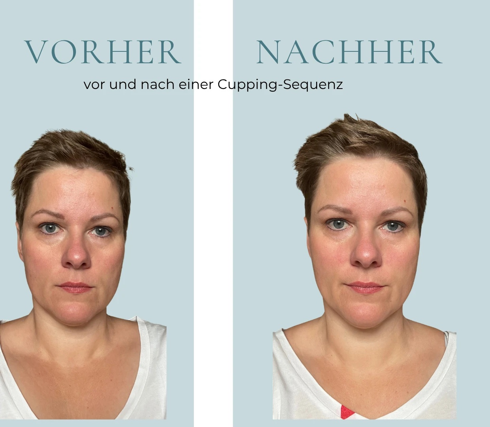
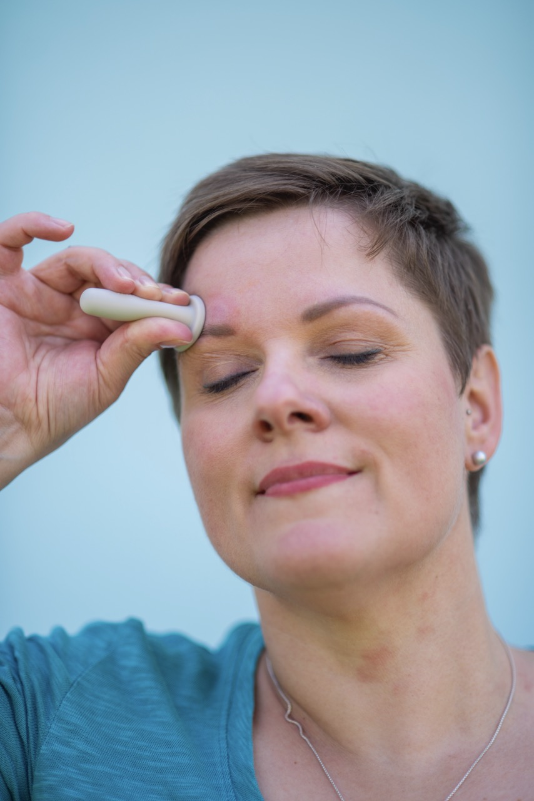

Mein kostenloses Erklärvideo: was Cupping ist, was es deiner Haut bringt und warum du nicht warten musst, bis die ersten Falten da sind.
Erkennst du dich wieder?
Dein Gesicht ist morgens oft aufgedunsen und zerknautscht, und du fühlst dich gar nicht frisch.
Deine Augen sind verquollen, deine Haut wirkt müde, und du brauchst ewig, bis du dich „zeigbar“ fühlst.
Du hast das Gefühl, deine Gesichtszüge werden schwerer, besonders an Wangen und Kieferlinie.
Deine Haut verändert sich mit dem Alter, aber Filler oder Spritzen willst du nicht.
Du sehnst dich nach einem natürlichen Weg zu mehr Ausstrahlung.
„Ein kleiner Moment für dich. Eine große Wirkung für deine Haut.“
In diesem kostenlosen Video zeige ich dir, wie Cupping funktioniert und was es für dein Gesicht tun kann. Einfach eintragen, sofort schauen.
Kostenlos · kein Abo · direkt in dein Postfach
Vorher und nachher
Mein eigenes Gesicht, vor und nach einer einzigen Cupping-Sequenz.

Aus meinem Video. Wie deine Haut reagiert, ist individuell.
Was dich erwartet
4
Minuten
0 €
Komplett kostenlos
5
sanfte Methoden im Überblick
sofort
abspielbar, kein Download
Was du im Gratis-Video erfährst
1
Die sanften Methoden im ÜberblickFace Yoga, Cupping, Gua Sha, Taping und Gesichtsmassage: worin sie sich unterscheiden und wofür sie jeweils gut sind.
2
Was Cupping ist und was es dir bringtMit kleinen, weichen Cups entsteht ein sanfter Unterdruck. Das fühlt sich an wie eine liebevolle Mini-Massage und regt die Durchblutung an.
3
Vorher und nachher an meinem GesichtDu siehst, wie mein Gesicht nach nur einer Cupping-Sequenz aussieht.
4
Warum Pre-Aging so wirkungsvoll ist„Ich habe doch noch keine Falten!“ Genau dann ist der perfekte Zeitpunkt, um zu starten.
Was Cupping für dich tun kann
Deine Haut wird besser durchblutet, dein Teint wirkt frischer und lebendiger.
Verspannungen im Gesicht lockern sich, du spürst, wie dein Gesicht entspannter wird.
Ideal, wenn dein Gesicht morgens oft geschwollen wirkt.
Deine Pflege fühlt sich danach noch angenehmer an, weil du sie sanft einmassierst.
Und das Schönste: ein kleiner Moment nur für dich, ganz ohne Nadeln, Filler oder Chemie.
Das sagen meine Kundinnen
„Das Cupping ist der Hammer. Es macht meine Haut viel weicher und straffer.“
Kundin · Cupping
„Ich liebe das Cupping, das geht so einfach und schnell.“
Kundin · Cupping
„Cupping hat meine Haut toll gestrafft, es ist leicht anzuwenden, und die Handhabung mit den Cupps ist echt klasse.“
Kristin leitet einen in ihrem Kurs richtig toll an, damit man auch nichts falsch machen kann.
Kundin · Cupping Kurs
Dein kostenloser Einstieg
4 Minuten. Mehr Frische.
Trag dich ein und ich schicke dir das Video direkt zu. Kein Abo, keine versteckten Kosten. Nur ein ehrliches Geschenk von mir.
Erklärvideo von Kristin zum Gesichtscupping
Mit Vorher-Nachher an meinem eigenen Gesicht
Direkter Zugang per E-Mail
100 % kostenlos, kein Abo
Kein Spam. Kein Abo. Jederzeit abmeldbar.
Warum ich dir das schenke
Ein Wort von Kristin
Ich bin Kosmetikerin mit 20 Jahren Erfahrung. Cupping gehört für mich zu den schönsten Methoden, die du selbst zu Hause anwenden kannst: Es braucht nur ein paar Minuten, kein großes Wissen und keine teuren Geräte.
Ich mache es selbst fast jeden Morgen. Mit diesem Video möchte ich dir zeigen, was möglich ist, bevor du irgendetwas kaufst.
„Du musst nicht warten, bis die ersten Falten da sind.“

„Ein kleiner Moment für dich. Eine große Wirkung für deine Haut.“